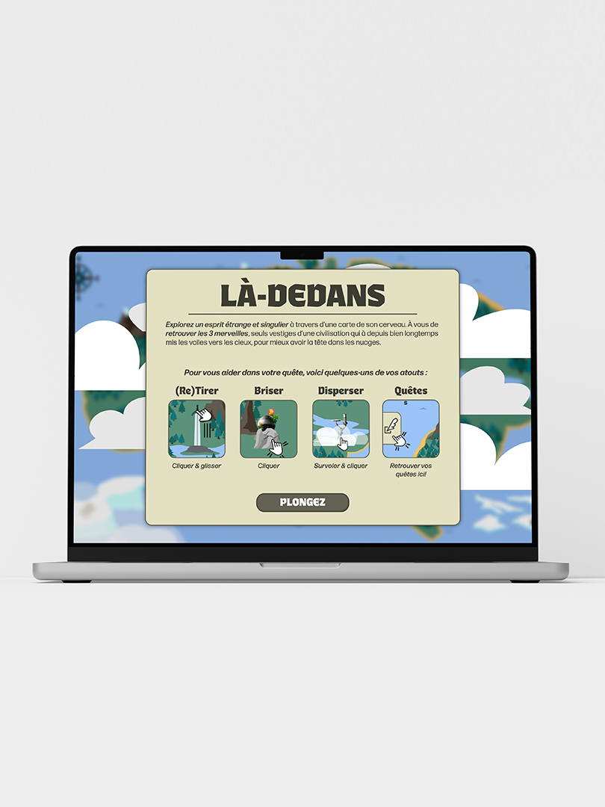

Là-dedans
Projet scolaire explorant l’introspection de l’auteur par l’intermédiaire d’une expérience interactive gamifié. Inspiré de ma passion pour la nature, l’exploration et les jeux d’aventure, j’ai choisi de plonger l’utilisateur dans une carte où il doit trouver trois ruines afin d’en apprendre plus sur l'environnement où il se trouve.
